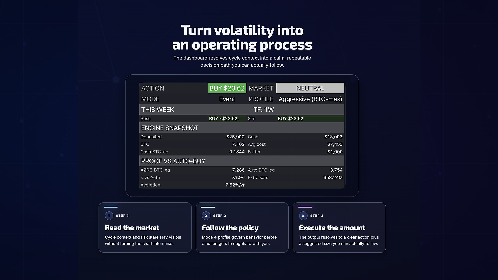
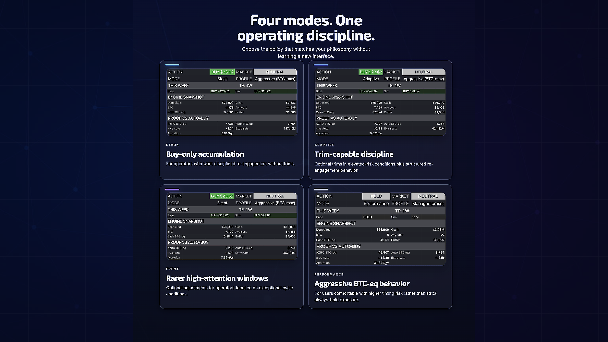
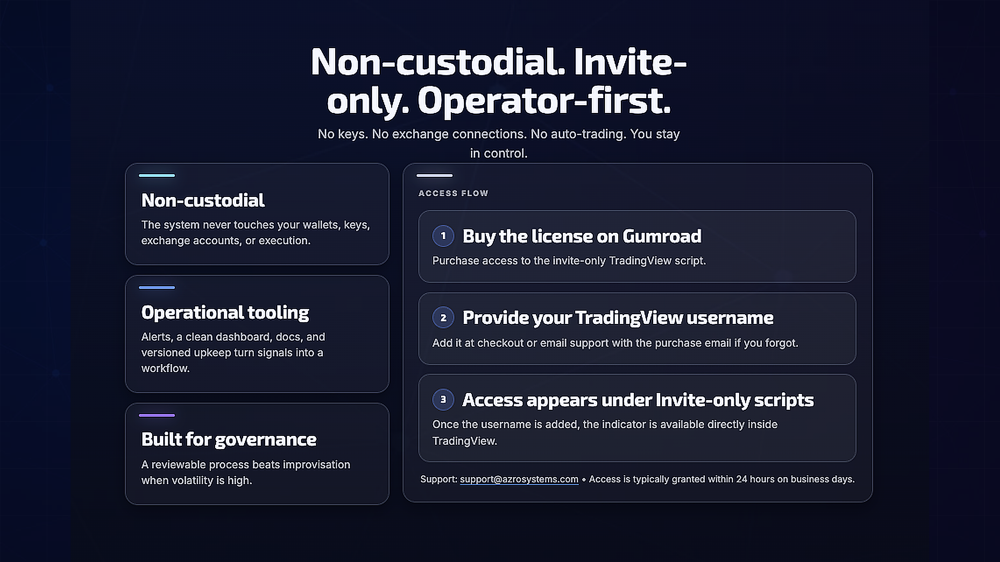
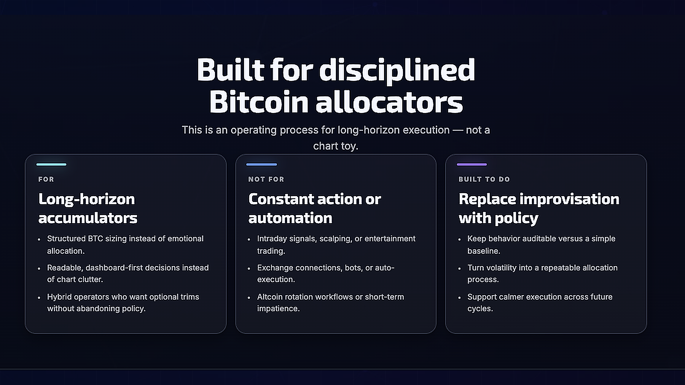

01 Cover
Open full-slide screenshot page · 4K PNG:
viewport-ready-4k/slide-01-cover.pngThis kit keeps the same slide designs, but each page now opens a single centered 4K 16:9 image so you can screenshot the whole section with no clipping. The direct 4K PNGs are also included if you want to upload them without taking a screenshot.
viewport-ready-4k/slide-01-cover.png
viewport-ready-4k/slide-02-process.png
viewport-ready-4k/slide-03-modes.png
viewport-ready-4k/slide-04-accountability.png
viewport-ready-4k/slide-05-access.png
viewport-ready-4k/slide-06-fit.png